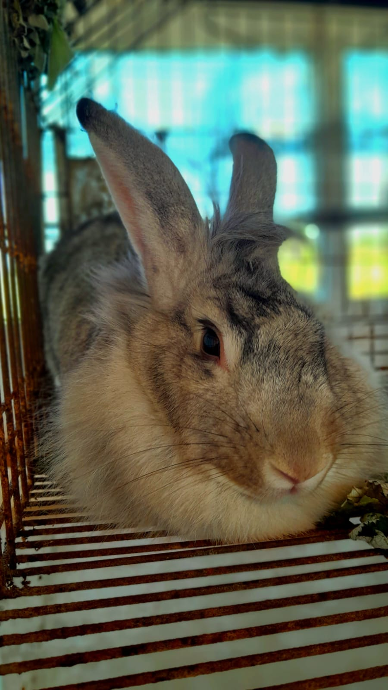
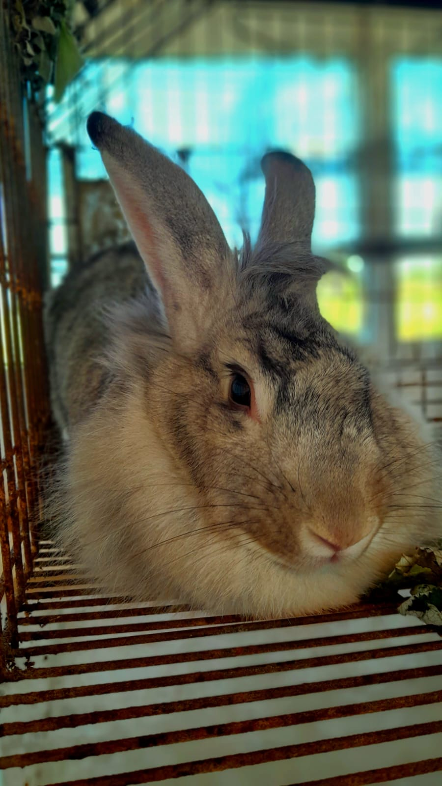
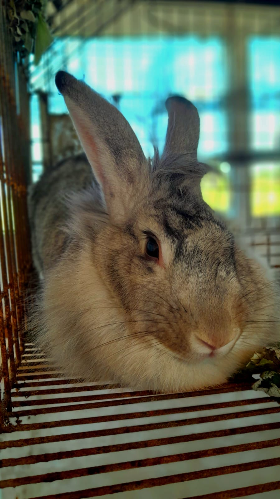

Galeria de Imagens
 

×

A visita técnica realizada ao Instituto Federal de Educação, Ciência e Tecnologia de Rondônia (IFRO) - Campus Colorado do Oeste teve como objetivo proporcionar uma experiência enriquecedora aos participantes, explorando as atividades relacionadas à criação de animais, cultivo de hortaliças pelos alunos, bem como conhecer projetos inovadores, como o silagem, o de judô e a criação IFRO Mobile.
A primeira atividade consistiu em uma apresentação dos projetos desenvolvidos pelos alunos e professores do campus. Foram destacados projetos como o silagem, que busca aplicar tecnologias de agricultura de precisão, o projeto de judô, que promove valores de disciplina e respeito por meio da arte marcial, e o IFRO Mobile, que demonstra a integração entre educação e tecnologia.
Na segunda atividade, os participantes puderam conhecer as instalações de criação de animais do campus.Onde nos foram apresentados sobre os cuidados, manejo alimentar e sanitário dos animais, demonstrando o comprometimento e conhecimento adquirido por meio das atividades práticas.
A terceira atividade foi realizada no setor de horticultura do campus, onde nos foram apresentados o método de cultivo em hidroponia. Foram explicados os princípios da hidroponia, que permite o cultivo de plantas sem solo, utilizando uma solução nutritiva. Os participantes puderam observar as hortaliças em crescimento e compreender os benefícios desse método, como a economia de água e o controle mais preciso dos nutrientes.
A visita técnica ao IFRO - Campus Colorado do Oeste ofereceu uma experiência abrangente e enriquecedora aos participantes. Desde a apresentação dos projetos até a visita às criações de animais e a exploração do campus, os participantes tiveram a oportunidade de vivenciar a teoria em prática e conhecer as instalações educacionais. A atividade de cultivo em hidroponia trouxe uma compreensão mais profunda sobre métodos de cultivo sustentáveis e tecnológicos, enquanto a exploração do campus permitiu visualizar a infraestrutura que apoia a educação e o desenvolvimento dos alunos.
Agradecemos ao IFRO - Campus Colorado do Oeste por receber nossa visita e proporcionar uma experiência tão enriquecedora. Agradecemos também aos alunos e aos professores que nos guiaram e compartilharam seu conhecimento conosco, tornando essa visita memorável e inspiradora.
Assinatura: Aluno:Willem de Moura Barboza -- Turma : 3° B -- Curso: Informática -- Data da visita: 16/08/2023
